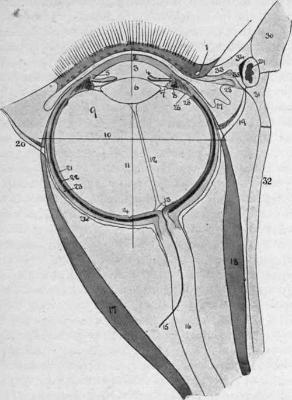

Nerve-Supply to the Eye
Description
This section is from the book "Surgical Anatomy", by John A. C. MacEwen. Also available from Amazon: Surgical Anatomy.
Nerve-Supply to the Eye
All these muscles are supplied by the third nerve, except the superior oblique, which is supplied by the fourth, and the external rectus, which is supplied by the sixth. The third nerve also supplies the levator palpebra: superioris, and indirectly the iris and ciliary muscle of the eyeball, through the ciliary ganglion.
A complete paralysis of the third nerve accordingly causes ptosis, or drooping of the eyelid ; external rotation of the eyeball, and consequent diplopia ; fixation of the eyeball, save for down and outward movements ; loss of power of accommodation (ciliary paralysis) ; and dilatation of pupil. An irritation of the third nerve causes contraction of the pupil.
The fourth nerve is rarely affected alone, and when it is, causes slight upward movement, with limitation of downward movement of the eyeball, and possibly diplopia.
When the sixth nerve is paralyzed there is convergent strabismus, with consequent diplopia, while external rotation is very slight, the obliques only being capable of rotating the eye so as to look directly forwards.
The first or ophthalmic division of the fifth nerve supplies sensation by its three branches to the skin of the brow, upper eyelid, both canthi, and nose ; eyeball and conjunctiva, except that of the lower lid ; and also the nasal mucous membrane. Lesions of this branch are followed by loss of reflex blinking, and hence irritation and ulceration of the cornea frequently follow.
The third, fourth, sixth, and first divisions, of the five nerves may be pressed on and paralyzed by tumours of the orbit or sphenoidal fissure. The third nerve is frequently affected by, and gives valuable indications of, pressure in the middle fossa, arising from bleeding from the middle meningeal artery, or abscess or tumour of the temporo-sphenoidal region. Slight pressure upon it causes irritation, and hence contraction of the pupil, whereas great pressure causes paralysis with dilatation of the pupil. The sixth nerve and the optic nerve itself may be divided by orbital fractures.
The sympathetic supplies some unstriped fibres in the upper eyelid, the unstriped orbitalis muscle of Müller which bridges the spheno-maxillary fissure, and the radial or dilator fibres of the iris. In paralysis of the cervical sympathetic, therefore, there is narrowing of the palpebral fissure, recession of the globe, and contraction of the pupil.
The blood-supply of the orbit is by the ophthalmic artery from the internal carotid, which pursues a tortuous course through the fat of the upper segment of the orbital cavity, gives off several branches, including the central artery of the retina, and terminates by inosculating with the angular branch of the facial. The blood returns through the superior and inferior ophthalmic veins to the cavernous sinus. As these veins communicate with those of the face and nose they form a channel for the ready extension of organisms to the cavernous sinus, resulting in cavernous sinus thrombosis. An arteriovenous aneurysm may result from communication between the ophthalmic artery and veins, or indirectly between the artery and the sinus, causing dilatation and pulsation of the veins of the eyeball and forehead. Aneurysm of the artery itself is sometimes met with, as are also pulsating sarcomas.
Suppurative processes occurring in the orbital cavity tend to spread rapidly, causing proptosis, with redness and swelling of the conjunctiva and eyelids, and possibly destruction of the eyeball, and by extension backwards cavernous sinus thrombosís. Abscesses frequently discharge at the outer side of the lower eyelid, and this is generally the best point for evacuating them.
The eyeball is situated within the orbit, rather to the nasal side of the centre, and hence, when excising, it is generally most convenient to introduce the scissors for division of the nerve from the outer side. It is invested by the capsule of Tenon, which may be regarded as its socket. Commencing in front at the margin of the cornea, and lying under the conjunctiva, with which it is fused at this part, the capsule passes back over the eyeball, to which it is loosely attached by areolar tissue, to the point of entrance of the optic nerve, with the sheath of which it fuses. The capsule is thus in contact on its inner surface with the globe of the eyeball, and on its outer with the orbital fat.
The tendons of the ocular muscles pierce this capsule opposite the equator of the globe, a reflection of the capsule to form a sheath being received by each of the recti muscles as they do so. At each of these reflections the capsule is strengthened by loops of fibrous tissue-the intracapsular ligaments-the extremities being attached to the orbital wall, while the loops pass under the muscular tendons, forming pulleys, upon which the recti muscles work, and which thus protect the globe from pressure. The ligaments supplying the internal and external recti, specially well developed and attached at their extremities to the lachrymal and malar bones respectively, are known as check ligaments, and limit excessive rotation of the globe inwards or outwards. The most important attachment of the capsule to the orbital wall is afforded by the suspensory ligament of Lockwood, which, attached at its extremities to the malar and lachrymal bones, runs across under the anterior part of the eyeball, and so supports it. This ligament is practically part of the capsule, becoming intimately fused with it as it passes under the eyeball. In excising the upper jaw it is important to preserve this suspensory ligament, otherwise the eyeball tends to sink downwards. It also forms a check ligament for the inferior rectus, while the superior rectus is checked by connection with the levator palpebra?.
The Eyeball, which, but for the corneal portion, is spherical, is composed of three coats. The outer consists of sclerotic and cornea ; the middle of chorioid, ciliary body, and iris ; and the inner of the retina. Where the antero-posterior diameter of the eyeball is normal, the eye is said to be emmetropic ; where too short, a condition of hypermetropia is produced ; and where it is too long, myopia exists. Hypermetropia is corrected by the use of a convex lens, which brings the rays more quickly to a focus ; and myopia by a concave lens, which delays the convergence.
Fig. 8.-Diagram of Eye. (After Fuchs.)
1. | Eyelid with lashes, openings of Meibomian | 17· | Rectus externus. |
glands and lachrymal punctum. | 18. | Rectus internus. | |
2. | Cornea. | 19. | Internal check ligament. |
3. | Anterior chamber. | 20. | External check ligament. |
4· | Iris, with posterior chamber behind it. | 21. | Retina. |
5· | Canal of Schlemm. | 22. | Chorioid. |
6. | Lens. | 23· | Sclerotic. |
jr. | Suspensory ligament, containing the canal of Petit. | 24. | Tenon's capsule. |
25· | Ora serrata. | ||
8. | Ciliary process, containing longitudinal and circular fibres of ciliary muscle and spaces of Fontana. | 26. | Orbicularis ciliaris. |
27. | Plica semilunaris of conjunctiva. | ||
28. | Caruncle. | ||
9· | Vitreous surrounded by the hyaloid membrane. | 29. | Lachrymal sac. |
30· | Nasal process of upper jaw. | ||
10. | Axis. | 31. | Lachrymal bone. |
II. | Equator. | 32. | Orbital plate of ethmoid. |
12. | Hyaloid canal of Stilling. | 33· | Inner palpebral ligament. |
13. | Optic disc. | 34· | Anterior limb of palpebral ligament. |
ΐ4· | Fovea centralis. | 35· | Posterior limb of ligament with Horner's muscle (tensor tars«i) springing from it. |
ι δ- | Central artery of retina. | ||
ι 6. | Optic nerve. |
Continue to: